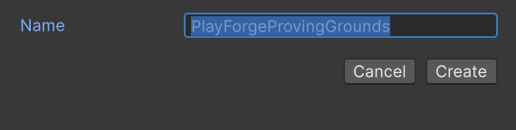

The project and its folder
A Forge Project lives in a folder of its own under the PlayForge Folder, with a folder inside for each type's assets.
Make a Forge Project
- In The Forge's project menu, choose New Project….
- Enter a Name. It starts as the game's product name, from Player Settings, without its spaces.
- Select Create.

New Forge Project.
PlayForge makes the project in a folder of its own under the PlayForge Folder, such as
Assets/PlayForge/Arena/Arena.asset, and makes it the active one. With it, PlayForge makes:
- the project's Game Root entity, in its
GameRootfolder. It's the game's own entity, on the System side, which the project's GameRoot runs as. - the Bootstrapper, GameRoot and ProcessControl prefabs, in the PlayForge Folder's
Bootstrapfolder, where they're missing. A Bootstrapper that plays no project plays the new one.
Bootstrap, the prefabs' folder, can't be a project's name.
Two other commands make a project:
| Command | What it makes |
|---|---|
| Create Forge Project, where the Unity project has none | The same as New Project…. |
| Create → PlayForge → Forge Project | The project's asset alone, in the folder the Project window shows. |
The PlayForge Folder
The PlayForge Folder is Assets/PlayForge until Project Settings → PlayForge sets another.
Where it's the folder PlayForge's own code is in, or a folder inside it, projects and Bootstrap go in a folder beside
the code's, named for it, such as Assets/PlayForge Projects. That way the code's folder never holds a project's files.
Type folders
A type's new assets go in its folder within the project's folder. The folder is made as the first asset of the type is. Until Project Settings → PlayForge says otherwise, the folders are:
| Type | Folder |
|---|---|
| Ability | Abilities |
| Gameplay Effect | Effects |
| Item | Items |
| Attribute | Attributes |
| Attribute Set | AttributeSets |
| Entity | Entities |
| Scaler Asset | Scalers |
| Requirement Template | Requirements |
| Value Pipeline | Pipelines |
| Effect Modifier | Modifiers |
| Crowd Control Rules | Rules |
A type The Forge doesn't list, such as a Tag Library, goes in the project's folder itself.